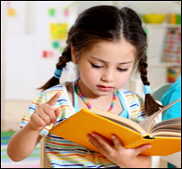

Отзывы благодарных родителей

Юля
Большое спасибо логопеду Марине, благодаря которой мои дети (сын 6 лет и дочь 4 года) могут правильно произносить все звуки. Хочу отметить чуткое отношение к детям. Уроки насыщеные и интересны ребенку, в игровой форме . Мои дети всегда с удовольствием приходили на занятия. За короткий срок прогресс был налицо. Марина отличный специалист и педагог. Просто приятная, интеллигентная женщина. Мы очень рады что обратились к ней. Приходите и занимаетесь с удовольствием! Юлия

Диана
Наша 4-летняя дочь говорила так, что мы сами ее с трудом понимали. И нам повезло, что мы вовремя обратились именно к этому специалисту! На первом занятии я увидела ее чуткость в общении с ребенком, увлеченность своим делом и готовность помочь. Чего стоит признание моего достаточно замкнутого в общении с малознакомыми людьми ребенка, сделанное на втором же занятии: "Марина, я тебя люблю!" Курс занятий продолжался чуть больше полугода. Хочется отметить высокий профессиональный уровень в подготовке занятий! Теперь наша дочь чисто говорит по-русски и готова к изучению английского языка. Марина, огромное спасибо Вам за Ваш нелегкий, но прекрасный труд! Анастасия

Даня
"Большое спасибо Марине за ее доброе отношение, упорный труд и любовь, которые она вложила в нашего Даню. Мы довольны!" Мариана

Юля
"Мы не знали, что с нашим ребенком. Юля совсем не говорила, когда ей было уже 3 года. Мы были в панике и метались в поисках специалиста. После консультации с Мариной все встало на свои места. Мы получили направление по работе над речью дочки. Занимаемся 2 раза в неделю у логопеда в оффисе и почти каждый день дома сами. Сейчас Юле уже больше 4-х , она читает небольшие стихи, знает , как выделять звуки, делает упражнения с языком, имеет неплохой словарный запас. Занятия с Мариной Юля очень любит. Спасибо большое." Наташа и Дима

Даша
"У нас был тяжелый случай. Три языка в семье - русский, английский и испанский. Речевое развитие у дочки задерживалось. Знакомые дали телефон русскоговорящего логопеда. Мы начали занятия. И нам понравился подход , потому что Марина занималась развитием всех компонентов языка, и в итоге все три языка начали как-то выговариваться, пошли в гору. Мы ходим три раза в неделю вечерами после садика. Это довольно поздно, но занятия такие веселые и много игр, что дочка бежит туда. Надеемся продолжать до самой школы, хотим, чтобы русский язык у дочки не пропал." Сергей